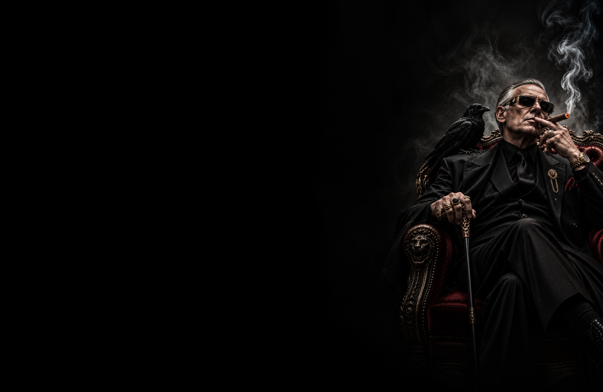

МАФИЯ · ЛИДЕР
ДОН
МАФИИ
ПОСЛЕДНЕЕ СЛОВО
ВСЕГДА ЗА НИМ.
Мафия
Командная · Лидер
Последнее слово — если ночью Мафия не может прийти к единому решению, выбор Дона становится окончательным. Все участники Мафии обязаны поддержать его цель.
Главарь бандитской группировки, за которым всегда остаётся последнее слово. Если Мафия не может определиться, кого устранить этой ночью, она следует решению Дона. Игрок, на которого указал Дон, становится общей целью Мафии.
Дон не получает дополнительного убийства и действует вместе с Мафией. Его решение имеет приоритет только в случае разногласий внутри команды.
Не раскрывай своё влияние слишком рано. Управляй командой незаметно, направляй подозрения и оставляй последнее слово за собой тогда, когда это действительно решает исход игры.